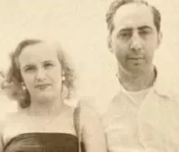

Frank William Abagnale
About the Legend
☛ Frank William Abagnale was born in
Bronxville, New York, United States
on 27 April 1948
☛Birth Name Frank William Abagnale Jr.
☛Nick Name Franky
☛Age 75 years (as in 2023)
☛Religion Christian
☛Zodiac Sign Taurus
☛Birth Place Bronxville, New York, United States
☛Date of Birth 27 April 1948
☛Nationality American,French
☛Residence New Rochelle, New York City
Charleston, South Carolina
☛Home Town Bronxville, New York.
☛Hobbies Not Available
FAMILY
☛Mother’s NameㅤㅤㅤㅤㅤㅤㅤㅤPaulette Abagnale
☛Father’s NameㅤㅤㅤㅤㅤㅤㅤㅤFrank Abagnale, Sr.
 ☛BrotherㅤㅤㅤㅤㅤㅤㅤNone
☛SisterㅤㅤㅤㅤㅤㅤㅤㅤNone
Marital Status, Wife and Children
☛Wife/SpouseㅤㅤㅤㅤㅤㅤㅤKelly Anne Welbes AbagnaleㅤㅤㅤㅤㅤㅤㅤㅤㅤㅤㅤㅤㅤㅤㅤㅤㅤㅤFrank Abagnale with his wife
☛Marriage Dateㅤㅤㅤㅤㅤㅤㅤㅤ6 November 1976
☛Childrenㅤㅤㅤㅤㅤㅤㅤㅤㅤㅤ Sean Abagnale
ㅤㅤㅤㅤㅤㅤㅤㅤㅤㅤㅤㅤㅤㅤㅤChris Abagnale
ㅤㅤㅤㅤㅤㅤㅤㅤㅤㅤㅤㅤㅤㅤㅤScott Abagnale
EDUCATION
SchoolㅤㅤㅤㅤㅤㅤㅤㅤㅤㅤㅤIona Preparatory Upper SchoolCollege/UniversityㅤㅤㅤㅤㅤㅤNone
EducationalㅤㅤㅤㅤㅤㅤㅤㅤㅤQualification None
ProfessionㅤㅤㅤㅤㅤㅤㅤㅤㅤImpostor
ㅤㅤㅤㅤㅤㅤㅤㅤㅤㅤㅤㅤㅤㅤConsultant
ㅤㅤㅤㅤㅤㅤㅤㅤㅤㅤㅤㅤㅤㅤAuthor
ㅤㅤㅤㅤㅤㅤㅤㅤㅤㅤㅤㅤㅤㅤFilm actor
Height, Weight, and Figure Measurements
Height (Approx.) in centimeters – 183 cm in meters – 1.83 m in Feet Inches – 6’0″Weight (Approx.) in Kilograms – 80 kg in Pounds – 177 lbs
ㅤㅤㅤㅤㅤㅤㅤLife Journey
Frank Abagnale Jr. was born in Bronxville, New York, on 27th April 1948. Much of the public’s knowledge of his personal background came through his biography Catch Me If You Can, published in 1980. Some of the facts in the book were exaggerated, according to Abagnale’s website, and the introduction also said that key elements of the tale were changed to protect other participants.
Abagnale was the third child born to Paulette and Frank Abagnale Sr., as per the memoir. During World War II, the pair met in Algiers while Frank Sr. was posted in Oran, and Paulette was in her teens when they married. Following the war, the two relocated to New York, where Frank Sr. established his own company.
Abagnale’s first victim was his father, who handed him a credit card for gasoline and a truck and was eventually responsible for a $3,400 payment. At the time, Abagnale was just 15 years old. According to Abagnale’s book, he was sent to a Catholic Charities USA-run reform school in Westchester County, New York, for this crime.
At the age of 16, he enrolled in the United States Navy in December 1964. He was released after less than three months and was caught shortly after for forgery. Abagnale was arrested by the Federal Bureau of Investigation in Eureka, California in 1965 for automobile theft after stealing a Ford Mustang from one of his father’s neighbors.
Abagnale was also accused of impersonating a US customs agent, but the case was eventually dismissed. This stolen automobile case was moved to the Southern District of New York on 2nd June 1965. This marked his debut in impersonating and scamming people.
Frank Abagnale Net Worth
Frank Abagnale has a net worth of $12 million.
Estimated Net Worth in 2023 (Approx) ㅤㅤㅤㅤㅤㅤㅤ$12 Million
Estimated Net Worth in 2022 (Approx) ㅤㅤㅤㅤㅤㅤㅤ$10 Million
Estimated Net Worth in 2021 (Approx) ㅤㅤㅤㅤㅤㅤㅤ$10 Million
Annual Salaryㅤㅤㅤㅤㅤㅤㅤㅤㅤㅤㅤㅤㅤㅤㅤㅤㅤㅤ $137k
Income Source ㅤㅤㅤㅤㅤㅤㅤㅤㅤㅤㅤㅤㅤㅤㅤㅤㅤㅤConsultancy
Frank Abagnale’s net worth was calculated using his FBI service job, various magazine reports, fraud checks, and his security consulting career. Frank has amassed a multi-million dollar fortune owing to his many sources of income. For more than four decades, he has served as a consultant and instructor for the FBI. He also owns and operates Abagnale and Associates, a financial consulting firm.
Frank Abagnale’s Scams
There are a number of frauds that Frank Abagnale did to scam people. Here is the list of those scams
Credit card scam
Abagnale began making money with his father’s petrol credit card. Abagnale persuaded gas station employees to refund him a portion of his transaction in cash, allowing them to keep a piece of the money. When his father received the credit card statement, which totaled thousands of dollars, the scheme fell apart.
Abagnale had no idea that his father was having financial difficulties. Abagnale’s mother, concerned about her son’s misbehavior, enrolled him in a boarding school for misbehaving boys. Abagnale reportedly left home at the age of 16 because of his father’s unexpected circumstances and the conflicts between his parents. Abagnale was a poor man with little money and no formal education.
Abagnale forged his driver’s license and overstated his schooling to appear ten years older than he was. He was able to secure better-paying employment as a result of this, but he was still barely scraping by. Abagnale decided to stop working and support himself by writing bogus checks.
Before he realized it, Abagnale had generated hundreds of bogus checks and it had overdrawn his bank by thousands of dollars. He went underground since he knew he would ultimately be discovered.
Impersonations Scam
Abagnale discovered that if he wowed bank telleprs with a new, more dazzling personality, he could cash more fraudulent checks. He believed that pilots were well-respected professionals and devised a plan to obtain a pilot’s uniform.Abagnale contacted Pan American Airlines to report that he had misplaced his uniform while on the road. HQ directed him to where he could get a new one, which he did — and then charged it to the firm using a fictitious employee identification number.
Abagnale then ingeniously manufactured his own pilot’s I.D. and F.A.A. license by claiming to be a high school student conducting a student newspaper piece on Pan Am and learning everything he could about flying. His deception netted his important information on how to pass himself off as a pilot, which he used to reportedly hitch rides on flights all around the world.
Abagnale discovered that if he wowed bank telleprs with a new, more dazzling personality, he could cash more fraudulent checks. He believed that pilots were well-respected professionals and devised a plan to obtain a pilot’s uniform.
Abagnale contacted Pan American Airlines to report that he had misplaced his uniform while on the road. HQ directed him to where he could get a new one, which he did — and then charged it to the firm using a fictitious employee identification number.
Abagnale then ingeniously manufactured his own pilot’s I.D. and F.A.A. license by claiming to be a high school student conducting a student newspaper piece on Pan Am and learning everything he could about flying. His deception netted his important information on how to pass himself off as a pilot, which he used to reportedly hitch rides on flights all around the world.
Time in prison and consulting
Abagnale was sentenced to prison in France (where he allegedly grew gravely ill), Sweden, and the United States for his crimes, at which time his father died. After serving several years in a Virginia prison, Abagnale was ultimately given release. He ultimately got a job as a white-collar fraud specialist, giving lectures to bank personnel about how to avoid fraud and theft.The government informed Abagnale that in exchange for his freedom, he had to teach them about his tactics in order to avoid others from scamming authorities. For more than 30 years, Abagnale worked for the FBI as one of the world’s leading specialists on document fraud, check defrauding, forgery, and misappropriation. He also founded Abagnale & Associates, a firm that teaches others how to avoid becoming victims of fraud.
Facts
•He was a check forger, imposter, and escape artist in the past. In the 1960s, he earned a terrible reputation by transferring $2.5 million in meticulously counterfeit cheques across 26 nations over a five-year period, starting when he was 16 years old.•He claimed to have assumed the identities of an airline pilot, a doctor, a jail guard, and a lawyer, among others.
•Before he was 21 years old, he escaped from police custody twice once from a moving airplane at an airport and even once from an American prison.
•Before beginning to work for the American federal (national) government, he spent fewer than five years in jail.
•He works as a consultant and instructor for the Federal Bureau of Investigation (FBI), the United States’ national police force.
•He also owns and operates Abagnale & Associates, a financial fraud consulting firm.
•The film Catch Me If You Can, directed by Steven Spielberg and starring Leonardo DiCaprio and Tom Hanks, was based on Abagnale’s life.
•The film was inspired by Frank Abagnale’s memoirs Catch Me If You Can. Catch Me If You Can, a Broadway musical premiered in April 2011 in New York City.
FAQs
is Frank Abagnale’s IQ?140.
How old is Frank Abagnale?
75 years.
Did Frank Abagnale pretend to be a doctor?
Abagnale posed as a Georgia doctor for a year.
How old was Frank Abagnale when he ran away?
16 years old.
What is Frank Abagnale’s net worth?
$12 million.
For more information, check out Frank William Abagnale on Wikipedia. [ Developed by @ Marvin patalinghug. ]